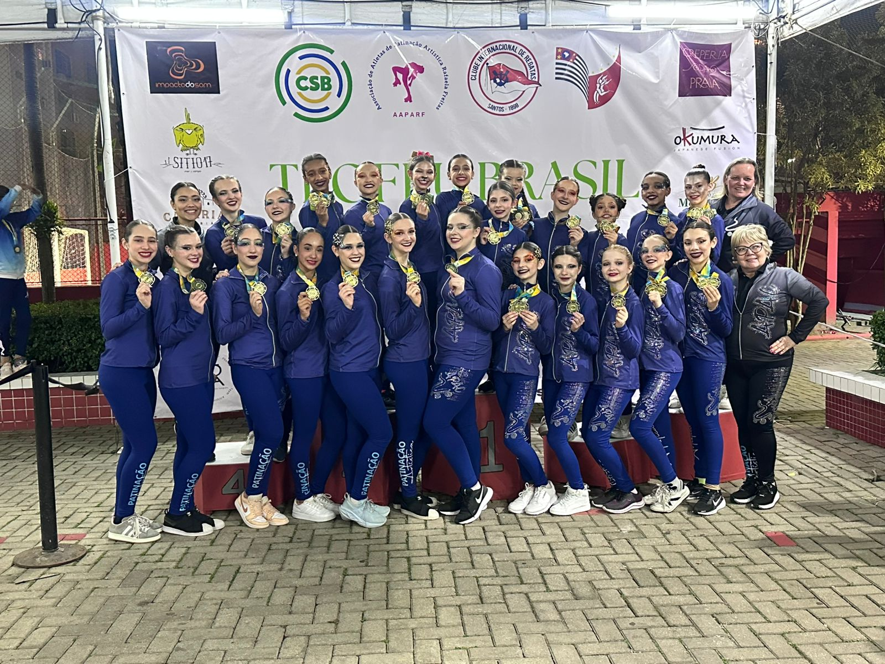

Formulário de Registro de Atleta e anexo de Documentos -
APAC Curitiba.
Unidos pela paixão ao esporte, nossa associação atua no fortalecimento da patinação artística por meio da cooperação e do apoio mútuo. Dedicamos nossos esforços ao desenvolvimento técnico e humano de nossos atletas, acompanhando-os com excelência em todas as etapas de sua jornada esportiva.

Conquistas
Nacionais e Internacionais
A Associação de Pais e Amigos de Patinadores nasceu com o propósito de fortalecer o esporte por meio da união, da cooperação e do apoio mútuo. Nosso principal objetivo é estar ao lado de nossos associados em todas as etapas de sua jornada esportiva.
Oferecemos suporte nas competições municipais, estaduais, nacionais e até internacionais, sempre acreditando que o patinador não caminha sozinho.
A APAC Curitiba acredita que a patinação artística é uma poderosa ferramenta de transformação social e desenvolvimento humano. Nossa comunidade vai muito além dos atletas de alto rendimento; ela engloba pais, amigos, voluntários, a Escola Curitibana de Patinação Artística (ECPA) e, principalmente, a população de Curitiba.
A comunidade APAC é um ambiente de união e apoio mútuo, onde o sucesso individual de cada atleta é celebrado como uma vitória coletiva. Por meio de apresentações, shows anuais e projetos como o "Patinadores do Futuro", buscamos inspirar a cidade, reforçando o valor do esporte, da arte e da dedicação. Somos uma comunidade que trabalha lado a lado com o poder público e parceiros privados para levar a patinação artística a todos os cantos de Curitiba.
Desenvolvemos iniciativas que vão além do esporte, promovendo inclusão, cultura e educação para toda a comunidade.
Atendimento da Arena de Patinação, Participação das Campanhas da prefeitura de Curitiba.
Show de Patinação Final do Ano em conjuto a Escola Curitiba de Patinação Artística - ECPA.
Cursos e treinamentos com profissionais de renome nacional e internacional, focados no desenvolvimento integral dos atletas.
Estamos sempre prontos para atender você. Entre em contato conosco ou nos siga nas redes sociais.
Utilize os canais abaixo para entrar em contato
apac.patins@gmail.com
Telefone
(41) 99999-9999
Acompanhe nossas atividades e novidades